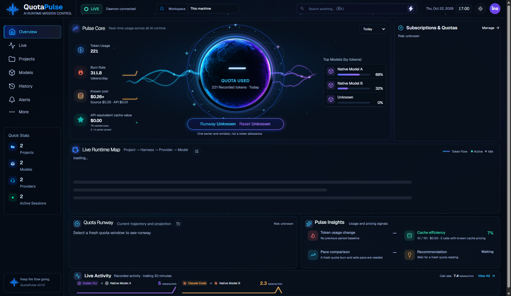

Validation and delivery evidence · Review bundle instructions · Requirement evidence · Latest reference-focused Cost comparison
Product120: real daemon/main/preload with an owned synthetic DB. Sixteen native pages and Settings restart pass. All3156 ZIP entries are verified and five standalone-copy smoke checks pass. Data and viewports differ from the concept; this is native runtime evidence, not99–100% visual acceptance. No synthetic profile is embedded in the review folder.
